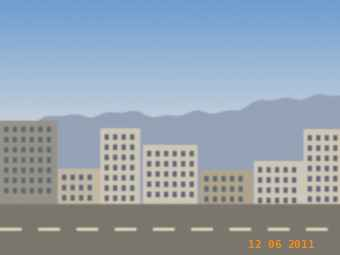
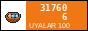

★ unofficial fan site of FC TULPAR TALAS ★ since 2009 ★
The bus goes from Central Square, 06:00, 150 som there and back (to Nurzhan). Bring scarf, flag, food. NO alcohol on the bus (the driver will throw you out, he did it twice).

Nurzhan, June 2011. Our sector. You can see my flag on the left (the one with the horse I drew!).
